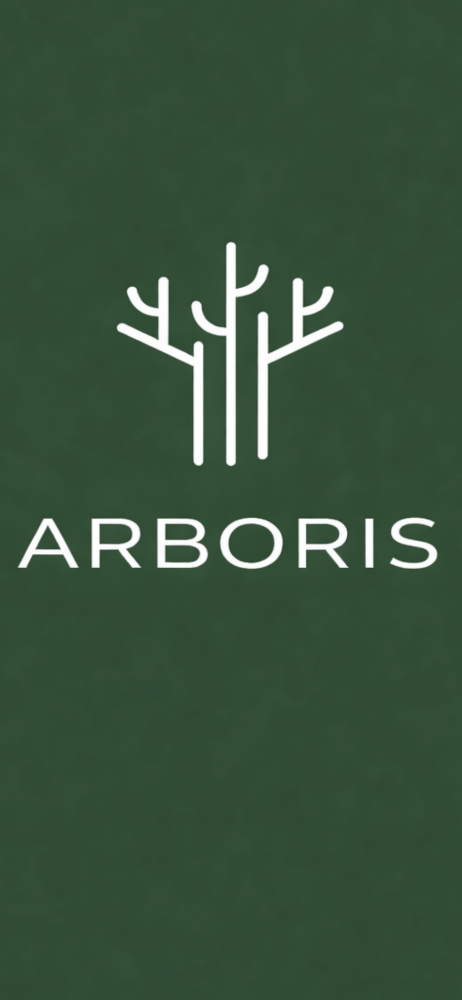

Colete dados em campo, realize levantamentos fitossociológicos, gere relatórios técnicos e exporte resultados diretamente do seu dispositivo Android.
Registro rápido e organizado de indivíduos arbóreos.
Coleta georreferenciada e visualização espacial.
Cálculo automático de índices e parâmetros florestais.
Exportação em Word e PDF prontos para uso técnico.
CSV, KML, HTML e integração com SINAFLOR.
Trabalhe mesmo sem acesso à internet.
O Arboris foi desenvolvido para biólogos, engenheiros florestais e consultores ambientais que precisam coletar dados com rapidez, organização e confiabilidade.
Baixe o manual completo do Arboris.
📖 Baixar ManualBaixe gratuitamente o Arboris e leve seus levantamentos para o próximo nível.
Baixar no Google Play